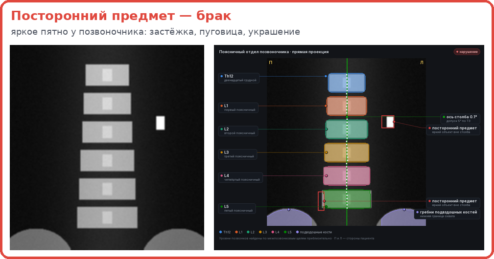
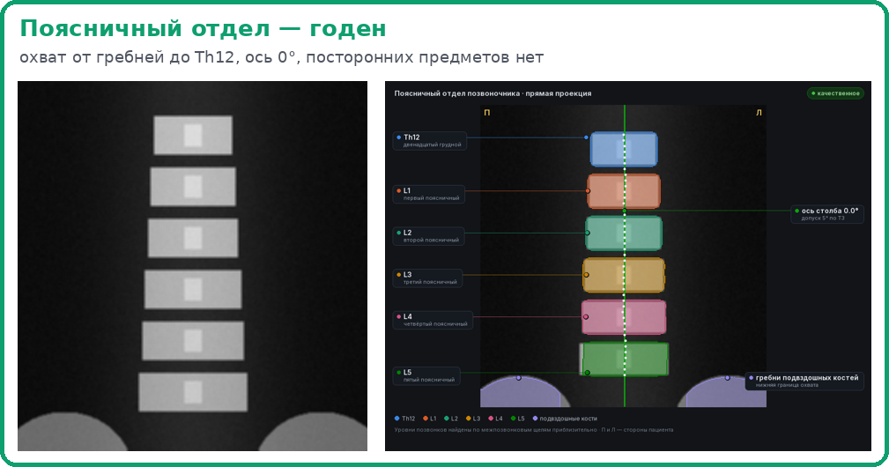
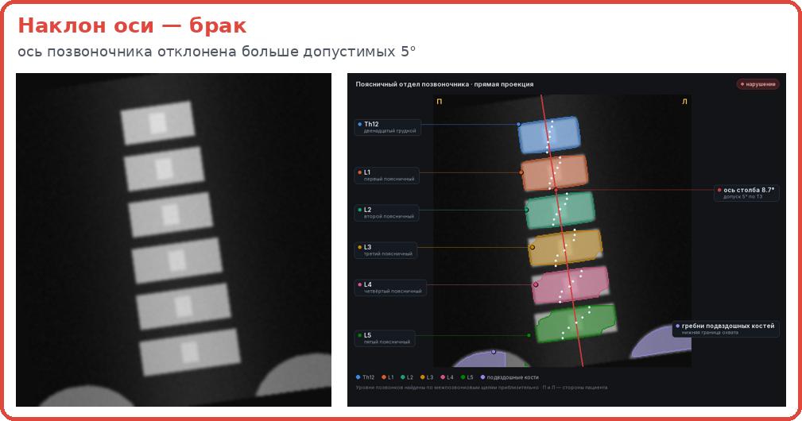
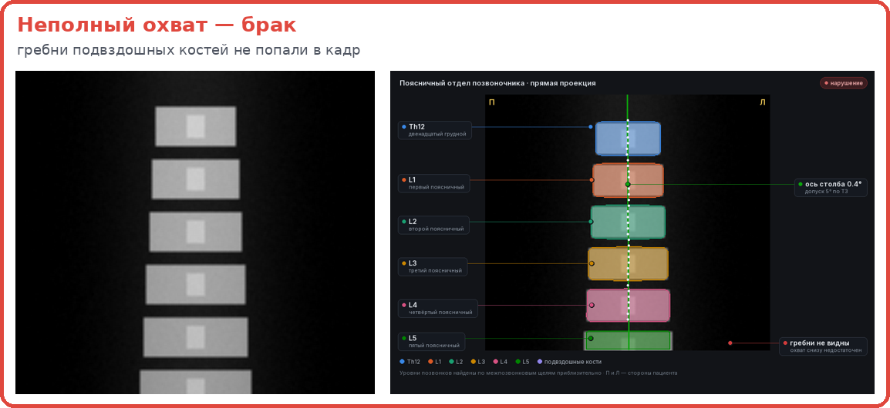
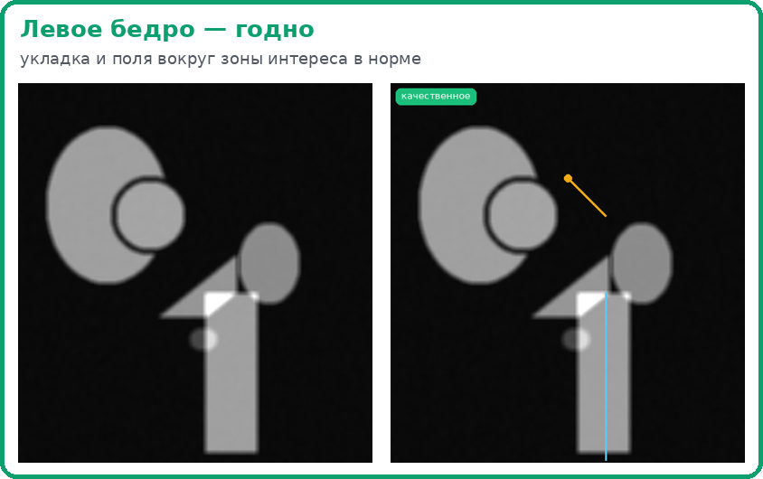
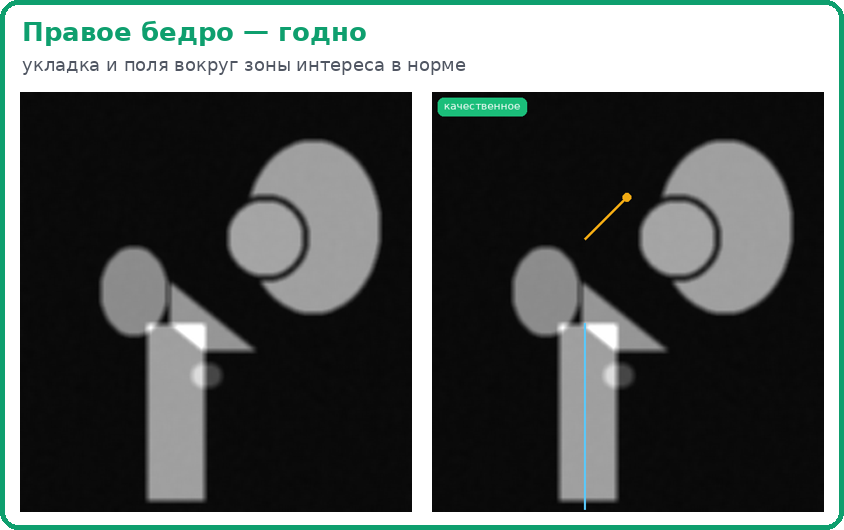

Kostik смотрит каждый снимок DXA сразу после исследования и говорит: годен или брак, какое нарушение и почему — прямо на снимке. Работает локально: снимки не покидают больницу.

ЛЦТ 2026, задача 04 Департамента здравоохранения Москвы (Центр диагностики и телемедицины): сервис ИИ, который оценивает качество исследований плотности костей. Врач должен узнать о браке, пока пациент ещё в кабинете, а не через неделю, когда снимок уже не переснять.
DICOM-снимки исследования без разметки: поясничный отдел и проксимальные отделы бёдер.
Строка на снимок: область, класс качества 0/1, тип нарушения, статус и время — CSV/XLSX по разделу 2.5 ТЗ.
Контейнер и API пакетной обработки, до 3 минут на исследование, воспроизводимо, без падений, без передачи снимков наружу. Метрики — F1 и ROC-AUC с 95 % ДИ.
Денситометрия (DXA, двухэнергетическая рентгеновская абсорбциометрия) измеряет минеральную плотность кости двумя пучками рентгена малой энергии. По ней диагностируют остеопороз и следят за лечением. Считают плотность позвонков L1–L4 и шейки бедра — поэтому число зависит от того, как лёг пациент.
Ось позвоночника отклонена больше 5° или бедро ротировано — плотность считается по косой проекции и «плывёт».
В кадр не попали гребни подвздошных костей или Th12 — нельзя найти L1–L4 и сравнить с прошлым исследованием.
Застёжка, пуговица, украшение в зоне измерения завышают плотность — диагноз может быть пропущен.
Обучающий набор организатора — 100 исследований с одного аппарата. Снимки пациентов не публикуем: ниже синтетические фантомы, которые повторяют их устройство, и атлас, который строит Kostik.





Две недели, 15–29 сентября. Зелёным — что сработало, красным — что не сработало и было честно отброшено.
Позвонки Th12–L5 по межпозвонковым щелям, гребни подвздошных костей, ось столба, посторонние предметы по локальному контрасту пятна. Каждое решение — измерение, норма и вердикт.
ExtraTrees по 47 признакам формы кости, краёв кадра и ориентиров атласа; инференс на numpy без видеокарты. Вердикт бедра — подсказка для проверки.
Атлас с разметкой поверх снимка, переключатель «атлас ⇄ чистый снимок», граф «измерение → норма → вердикт», пояснение текстом и голосом.
Веб-стенд, Docker без сети, API и MCP для ИИ-ассистентов, приложение для Windows и Linux. Дообучение на правках врачей — плагинами с воротами качества.
git clone https://github.com/j0k/ltz2026 && cd ltz2026 ./build.sh # образ Docker, интернет нужен только здесь ./run.sh <папка или архив.zip> <выход> # results.csv, results.xlsx, overlays.zip
| Критерий | F1 (кросс-валидация, 95 % ДИ) | ROC-AUC | Уровень |
|---|---|---|---|
| Поясница, итог | 0,58 [0,46–0,74] | 0,75 | работает |
| Посторонние предметы | 0,55 | 0,85 | можно доверять |
| Охват | 0,69 | 0,88 | можно доверять |
| Наклон оси | 0,30 | 0,75 | сколиоз похож на наклон |
| Бедро, брак | 0,47 | 0,66 [0,62–0,69] | подсказка для проверки |
Кросс-валидация 5×50 по исследованиям, дубли в одной группе, пороги подбираются только на обучающей части. Подробно — в README и TRAINING.md.
1–2 отделения денситометрии: проверка каждого снимка в день исследования.
Спорные вердикты правятся в пульте — это данные для дообучения, оно уже встроено.
Разметка малого вертела и уровней позвонков, масштаб в мм от аппарата.
PACS и ЕРИС, отчёт о качестве по отделениям и лаборантам.
Двое участников и ИИ-агент как инструмент разработки. Решение сделали за две недели хакатона.
Руководитель проекта и продукт: постановка, приоритеты, приёмка каждой версии. Telegram @bimodaling
Стенд, Telegram-бот, проверка сервиса на чужих данных, обратная связь по продукту и презентации. Telegram @lesha_cfc
Код, тесты и документацию писали вместе с ИИ-агентом Claude через Codellake; трекер задач, стенд и автопуш в GitHub обновлялись с первого дня.